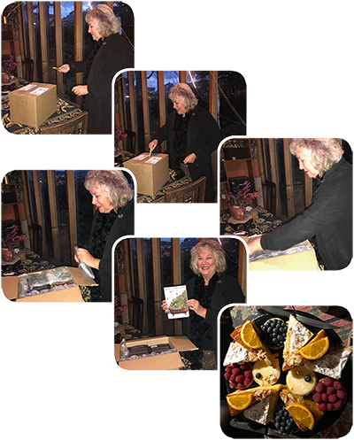

|
|


Room for Delusion : Margaret Mathews

{kind=link}
Room for Delusion
Bella.
Isabella Cavani. I whisper her name. It sounds like a hummingbird
fleeing my mouth, and if I shout it, the letter ‘l’ pulses in my head
and vibrates away. She’s Isabella Cavani. Bella. She’s my therapist.
And I’m terrified of losing her.
Bronwen is vulnerable. She consults psychotherapist Isabella Cavani. But who is Bella? In consultations at the well-heeled therapist’s home, Bronwen wonders: is she the younger version of her mother who can listen as her own mother could not? Or is she the secret woman she desires?
Certainly Bronwen (with an ‘e’) will reveal through their sessions the shapes of her life: her parents, teenage angst, her husband, the kind and gentle Richard, her children and their times. An exposé of the fantasies and yearnings of a woman undergoing psychotherapy, the novel offers insight into the spirited but destructive Bronwen and her quest to overcome fears and obligations to an ageing, disturbed mother.
Told through the lens of Bronwen’s lusting for Bella, Margaret Mathews Room for Delusion oozes with life. Mathews is brilliant at capturing the panic involved in some of our everyday acts. You will ache for the ending.
You must be the change you wish
to see in the world
Mahatma
Gandhi
I
THE
OUTPOURING
ONE
My mother’s younger
than I am. I only see her for an hour a week in her lounge room. I’ve
never seen her at night, never had a coffee or a meal with her, never
seen her bedroom and never given her a kiss. I visit her every Friday
at eleven.
She always seems delighted to see me. She swings open her front door after I knock, smiles serenely and beams ‘Hello Bronwen.’ Once I thought I heard her call me Bron. She may be tired or troubled but never shows it and I would never ask. She leads me through her hallway into our room and shuts the door. We are alone. She is mine for an hour. All mine.
A distant train clatters and toots, a school bell dings and children whoop and squeal, but inside, all is hushed and tranquil, as if in a cathedral. The cider-green, high-ceilinged room is lit only by daylight. A piano hugs one wall and jutting from another is a mirrored Victorian mantelpiece. Vases and unlit candles are strewn across it. A writing pad, diary, box of tissues and a dish containing pens, sit on a coffee table. Yellow roses have been shoved into a clear vase.
A bay window glares onto a gaping lawn spilling into a purple paradise. The bunching wisteria clutches a trellised brick wall and fingers of sunlight tease it further. It nestles and commands. Nodding straight-laced irises, enticing lilac and pliable sweet-faced pansies, wave and smile. A bobbing lanky buddleia turns, oblivious to the surrounding hierarchy. Only the jasmine interjects. It trespasses through the azure-like labyrinth and occasionally its scent sneaks into our sanctuary. If I crane my neck, I can just glimpse Port Phillip Bay. Sometimes the drapes are drawn so I cannot daydream. We have to concentrate, this younger mother and I. We have to work hard. She will fix me. She will make me better.
She sits in her paisley-printed chair and waits. I hesitate onto an opposite matching two-seater couch. She’s there just for me, this Madonna of mine and her goodness and guidance will save me. She waits for me to speak. Always. She encourages and praises and listens ever so attentively. She studies my body language; catches the lilt in my voice, sees my hands clasp and notices my eyes watering. Sometimes hers water back. She leans towards me and occasionally mirrors my gestures. But we are different and not allowed to merge. That’s forbidden. Taboo. ‘Death,’ she says.
My younger mother is only younger by sixteen months. Actually sixteen months and four days. I counted once.
‘How old are you?’ I asked.
‘I’ll be forty-five on Cup Day.’
Finally, I knew something about her. I only had to inquire.
Sometimes though, if my question is considered too personal, she says nothing and just smiles. She says I slip over the boundaries. Also forbidden.
She’s shorter than I am. I’m tall with beefy shoulders because I’m a lap swimmer, but she’s more genteel. God threw me together, although he chucked me a good pair of legs, long sensitive hands and (thank you) an attractive face, but He pondered over her. He painted her an olive colour and moulded curvy hips. He marvelled at his generosity with her breasts and really took time with her face. Her eyes are like alpine lakes stung by the Mediterranean sun, and when she smiles, could radiate world peace. Her hair is Roman black, cut into a bob. As it swings into her face, she brushes a wispy bit from her lips.
She smells like... well she doesn’t smell like anything really. She’s not meant to draw attention to herself. It’s part of the job. Often a whiff of coffee and sometimes cinnamon, tempt from her kitchen. I suspect she’s a sensational cook. A server, a nourisher, a pleaser. Her voice flows out like honey. Orange blossom honey.
She wears lots of black, mostly tailored suits, but occasionally flits around in hugging jumpers, short skirts and opaque tights. Lately with boots. Once I saw she was wearing long stripy socks under her slacks. All the way up to her thighs.
‘Great socks,’ I murmured.
‘They go all the way to here,’ she pointed.
Sexy, teasing bitch. She is cultured and classy, elegant and educated and I reckon she’s also a rich bitch. I can’t live without her.
She always seems delighted to see me. She swings open her front door after I knock, smiles serenely and beams ‘Hello Bronwen.’ Once I thought I heard her call me Bron. She may be tired or troubled but never shows it and I would never ask. She leads me through her hallway into our room and shuts the door. We are alone. She is mine for an hour. All mine.
A distant train clatters and toots, a school bell dings and children whoop and squeal, but inside, all is hushed and tranquil, as if in a cathedral. The cider-green, high-ceilinged room is lit only by daylight. A piano hugs one wall and jutting from another is a mirrored Victorian mantelpiece. Vases and unlit candles are strewn across it. A writing pad, diary, box of tissues and a dish containing pens, sit on a coffee table. Yellow roses have been shoved into a clear vase.
A bay window glares onto a gaping lawn spilling into a purple paradise. The bunching wisteria clutches a trellised brick wall and fingers of sunlight tease it further. It nestles and commands. Nodding straight-laced irises, enticing lilac and pliable sweet-faced pansies, wave and smile. A bobbing lanky buddleia turns, oblivious to the surrounding hierarchy. Only the jasmine interjects. It trespasses through the azure-like labyrinth and occasionally its scent sneaks into our sanctuary. If I crane my neck, I can just glimpse Port Phillip Bay. Sometimes the drapes are drawn so I cannot daydream. We have to concentrate, this younger mother and I. We have to work hard. She will fix me. She will make me better.
She sits in her paisley-printed chair and waits. I hesitate onto an opposite matching two-seater couch. She’s there just for me, this Madonna of mine and her goodness and guidance will save me. She waits for me to speak. Always. She encourages and praises and listens ever so attentively. She studies my body language; catches the lilt in my voice, sees my hands clasp and notices my eyes watering. Sometimes hers water back. She leans towards me and occasionally mirrors my gestures. But we are different and not allowed to merge. That’s forbidden. Taboo. ‘Death,’ she says.
My younger mother is only younger by sixteen months. Actually sixteen months and four days. I counted once.
‘How old are you?’ I asked.
‘I’ll be forty-five on Cup Day.’
Finally, I knew something about her. I only had to inquire.
Sometimes though, if my question is considered too personal, she says nothing and just smiles. She says I slip over the boundaries. Also forbidden.
She’s shorter than I am. I’m tall with beefy shoulders because I’m a lap swimmer, but she’s more genteel. God threw me together, although he chucked me a good pair of legs, long sensitive hands and (thank you) an attractive face, but He pondered over her. He painted her an olive colour and moulded curvy hips. He marvelled at his generosity with her breasts and really took time with her face. Her eyes are like alpine lakes stung by the Mediterranean sun, and when she smiles, could radiate world peace. Her hair is Roman black, cut into a bob. As it swings into her face, she brushes a wispy bit from her lips.
She smells like... well she doesn’t smell like anything really. She’s not meant to draw attention to herself. It’s part of the job. Often a whiff of coffee and sometimes cinnamon, tempt from her kitchen. I suspect she’s a sensational cook. A server, a nourisher, a pleaser. Her voice flows out like honey. Orange blossom honey.
She wears lots of black, mostly tailored suits, but occasionally flits around in hugging jumpers, short skirts and opaque tights. Lately with boots. Once I saw she was wearing long stripy socks under her slacks. All the way up to her thighs.
‘Great socks,’ I murmured.
‘They go all the way to here,’ she pointed.
Sexy, teasing bitch. She is cultured and classy, elegant and educated and I reckon she’s also a rich bitch. I can’t live without her.
*
I would never have
met this woman if my marriage to Richard hadn’t crashed. We were
separated but still had sex. He’d moved into a nearby flat and after
midnight if I was crying or shaking, I’d bolt from our sleeping
daughters and roar around and pound on his door, even if his lights
were out. He was always asleep. Thank God another woman wasn’t there.
And he always accommodated me. I felt soothed but restless after our
lovemaking, would dash home soon afterwards, and gaze at Georgie and
Alex, hoping they hadn’t dreamt of my abandonment.
When Richard came over, we were cats marking our territory—flinging ourselves across the kitchen table, straddling dining room chairs, pummelling into the carpet. Flesh fanatics. But I always felt empty afterwards and Richard would get angry. Cock, tongues and tits couldn’t fill us up enough and we felt bereft and bewildered.
With a crate load of courage, we staggered, like a couple of refugees, into the Rathdowne Street Relationship Clinic. Like a lighthouse, it beamed out signals of illumination and hope.
Our first counsellor was Pauline. I think she had red hair. Her breath smelt of onions.
‘How did you two get together in the first place?’ she queried.
She was one of those clucky, broad-bummed, finicky types and said, ‘I can help you but I can’t ease your pain.’
I was glad when she left for Sydney.
At the next session my fairy godmother appeared. Even then she had a certain aura about her. She was always the professional. Long strides, firm shoulders and confident address. Yet when she sat and faced us, seemed as vulnerable as a little girl with ringlets. Her hair was longer then and she wore it behind her ears. When she became animated, her earrings danced like marionettes.
And she cared. Her concern, like warm milk, soothed us.
She battled on, as Richard and I blamed and cajoled, lamented and wept. We were lambs, and she yelped like a sheepdog, focusing on our desires and anxieties and disappointment at not being able to fulfil each other’s unmet childhood needs. She did enlighten us and radiate hope. Occasionally Rich would say ‘she’s on your side.’ But she wasn’t. She was very fair.
I visited her months later. She greeted me like an old friend. Richard had moved back in and we were all sweetness and light with each other.
She ushered me into her room, drew up a chair, and leaned forward. I was wearing jeans, and a floral T-shirt with pockets, where I hid my hands when I became anxious. It doubled as a maternity top.
I blurted it out. ‘I’m pregnant.’
‘I can tell,’ she said. ‘Your eyes say it all. You’re just blooming.’
She was happy for me. Happy that I’d fallen pregnant again at forty, after always wanting three kids and happy she’d helped Rich and me re-unite.
‘You’re a genius,’ I remarked.
She smiled.
I know we spoke of my father that day. She knew he was dying of lung cancer and had encouraged me to try and get close to him. And I did, although he wasn’t very receptive. But I’m glad I tried.
Even now I remember the exuberance of that session. She can’t recall a lot of our Carlton sessions and can’t quite picture Rich’s face. She wished me luck. I asked her if she saw clients privately and she simply replied ‘yes.’ She sent us a card after Andy’s birth and I rang to thank her, but she wasn’t there so I left a message.
And I picked up a red felt-tipped pen and wrote her name and number very boldly in our Teledex under the letter ‘B’. They stayed for six years and I often wonder why I didn’t erase them, but they stand fiery and defiant. The letters slope, like their namesake, sexy and seductive, sleek and mysterious. Bella. Isabella Cavani. I whisper her name. It sounds like a hummingbird fleeing my mouth, and if I shout it, the letter ‘l’ pulses in my head and vibrates away. She’s Isabella Cavani. Bella. She’s my therapist. And I’m terrified of losing her.
When Richard came over, we were cats marking our territory—flinging ourselves across the kitchen table, straddling dining room chairs, pummelling into the carpet. Flesh fanatics. But I always felt empty afterwards and Richard would get angry. Cock, tongues and tits couldn’t fill us up enough and we felt bereft and bewildered.
With a crate load of courage, we staggered, like a couple of refugees, into the Rathdowne Street Relationship Clinic. Like a lighthouse, it beamed out signals of illumination and hope.
Our first counsellor was Pauline. I think she had red hair. Her breath smelt of onions.
‘How did you two get together in the first place?’ she queried.
She was one of those clucky, broad-bummed, finicky types and said, ‘I can help you but I can’t ease your pain.’
I was glad when she left for Sydney.
At the next session my fairy godmother appeared. Even then she had a certain aura about her. She was always the professional. Long strides, firm shoulders and confident address. Yet when she sat and faced us, seemed as vulnerable as a little girl with ringlets. Her hair was longer then and she wore it behind her ears. When she became animated, her earrings danced like marionettes.
And she cared. Her concern, like warm milk, soothed us.
She battled on, as Richard and I blamed and cajoled, lamented and wept. We were lambs, and she yelped like a sheepdog, focusing on our desires and anxieties and disappointment at not being able to fulfil each other’s unmet childhood needs. She did enlighten us and radiate hope. Occasionally Rich would say ‘she’s on your side.’ But she wasn’t. She was very fair.
I visited her months later. She greeted me like an old friend. Richard had moved back in and we were all sweetness and light with each other.
She ushered me into her room, drew up a chair, and leaned forward. I was wearing jeans, and a floral T-shirt with pockets, where I hid my hands when I became anxious. It doubled as a maternity top.
I blurted it out. ‘I’m pregnant.’
‘I can tell,’ she said. ‘Your eyes say it all. You’re just blooming.’
She was happy for me. Happy that I’d fallen pregnant again at forty, after always wanting three kids and happy she’d helped Rich and me re-unite.
‘You’re a genius,’ I remarked.
She smiled.
I know we spoke of my father that day. She knew he was dying of lung cancer and had encouraged me to try and get close to him. And I did, although he wasn’t very receptive. But I’m glad I tried.
Even now I remember the exuberance of that session. She can’t recall a lot of our Carlton sessions and can’t quite picture Rich’s face. She wished me luck. I asked her if she saw clients privately and she simply replied ‘yes.’ She sent us a card after Andy’s birth and I rang to thank her, but she wasn’t there so I left a message.
And I picked up a red felt-tipped pen and wrote her name and number very boldly in our Teledex under the letter ‘B’. They stayed for six years and I often wonder why I didn’t erase them, but they stand fiery and defiant. The letters slope, like their namesake, sexy and seductive, sleek and mysterious. Bella. Isabella Cavani. I whisper her name. It sounds like a hummingbird fleeing my mouth, and if I shout it, the letter ‘l’ pulses in my head and vibrates away. She’s Isabella Cavani. Bella. She’s my therapist. And I’m terrified of losing her.
*
22 August 2027 at Black Pepper
photos by Laila Moughanie

Book Launch
Room for Delusion Launch Speech
by Elly Varrenti November 2017
I
met Margaret around 2008 when I was teaching writing at Box Hill TAFE.
She was one of those students you notice immediately –
smart, funny, challenging… and when she wasn’t being flamboyantly
interrogative – Margaret asked a lot of questions – she was
thoughtful and serious. Margaret wanted to write. She needed to
write.
She was also one of the oldest students in my class at the time, given that they were largely made up of people in their early to mid-20s. So called ‘mature age’ students are often the standouts, particularly in a creative writing class. Because they’ve usually returned to study or are studying for the first time, after a few years ‘on the outside’- after kids, relationships, jobs and plenty of experience. Often plenty of hardship too. Plenty of material. And most importantly they really want to be there. Students like Margaret inhale the creative oxygen of a writing class like they need it to live. And Margaret was not afraid to be vulnerable.
Her semi-autobiographical book is a page-turner-story about how our family of origin shapes us, erects the scaffolding of our lives and then compels us to live within its prescribed dimensions. Room for Delusion is a story about mining one’s past, dismantling the scaffolding, holding it up to scrutiny, unpacking those personal myths and memories that can keep us trapped. The narrator of Margaret’s book, Bronwyn, goes on such a journey of self-discovery during her weekly Friday psychotherapy sessions with her therapist Bella. The story is as much about Bronwyn’s self-investigation as it is an investigation of the therapist-patient relationship itself.
The other relationship at the centre of this narrative is that between a mother and a daughter. It is drawn with brutal candour and captures its unique, excruciating and complex dance of love and hate.
Bronwyn’s sessions with Bella, provide the story’s central pivot as it moves backwards and forwards between childhood, adolescence, adulthood, and the present day with her husband Richard and their 3 children. Bronwyn recounts and recalls her past self in the quest to understand and to mend her present one.
The writing is powered by a yearning prose that is self-aware, witty, sensual, lyrical, and at times so evocative you can just hear, smell, taste and see it. I particularly love the evocation of suburban Australia in the 1950s and the section when the family – Bronwyn, her sister Jenny and her mother and father– all drive to Frankston beach for the day is a classic.
She was also one of the oldest students in my class at the time, given that they were largely made up of people in their early to mid-20s. So called ‘mature age’ students are often the standouts, particularly in a creative writing class. Because they’ve usually returned to study or are studying for the first time, after a few years ‘on the outside’- after kids, relationships, jobs and plenty of experience. Often plenty of hardship too. Plenty of material. And most importantly they really want to be there. Students like Margaret inhale the creative oxygen of a writing class like they need it to live. And Margaret was not afraid to be vulnerable.
Her semi-autobiographical book is a page-turner-story about how our family of origin shapes us, erects the scaffolding of our lives and then compels us to live within its prescribed dimensions. Room for Delusion is a story about mining one’s past, dismantling the scaffolding, holding it up to scrutiny, unpacking those personal myths and memories that can keep us trapped. The narrator of Margaret’s book, Bronwyn, goes on such a journey of self-discovery during her weekly Friday psychotherapy sessions with her therapist Bella. The story is as much about Bronwyn’s self-investigation as it is an investigation of the therapist-patient relationship itself.
The other relationship at the centre of this narrative is that between a mother and a daughter. It is drawn with brutal candour and captures its unique, excruciating and complex dance of love and hate.
Bronwyn’s sessions with Bella, provide the story’s central pivot as it moves backwards and forwards between childhood, adolescence, adulthood, and the present day with her husband Richard and their 3 children. Bronwyn recounts and recalls her past self in the quest to understand and to mend her present one.
The writing is powered by a yearning prose that is self-aware, witty, sensual, lyrical, and at times so evocative you can just hear, smell, taste and see it. I particularly love the evocation of suburban Australia in the 1950s and the section when the family – Bronwyn, her sister Jenny and her mother and father– all drive to Frankston beach for the day is a classic.
Read pages 117 - 118
On other days when it was going to hit the ton, we’d drive down to Frankston.
‘It’s going to be a scorcher tomorrow,’ said Dad.
‘A hundred. How am I going to cope?’ said Mum.
They were up with the magpies. Dad hosed down the fowl pens, ‘have to keep the birds cool,’ and Mum watered her pot plants and fussed in the kitchen.
We were away before eight.
‘The best part of the day,’ said Dad. ‘You have to make an early start. Before the other morons get on the roads. And you get a parking spot.’
‘But most people go in a relaxed manner,’ said Mum.
We were usually the first family on the beach. We primed ourselves under the shadiest tea-tree shelter and idled the day away.
But at about three, my father would glance at his watch and say, ‘Okay, time to pack up.’
‘Already! Can’t we stay longer?’ said Jenny. ‘It’s still stinking hot. Look at those people,’ she pointed as a couple staggered with an esky, ‘they’re just getting here. I want another swim.’
‘Too bad. You should have gone in earlier. I need to feed the chooks and collect the eggs. Make my lunch for tomorrow. Hose the garden. And your mother’s got her jobs.’
‘You girls can rinse out your own bathers,’ she said. ‘I want to be finished by six-thirty. So I can relax. I don’t want to miss the start of the news.’
We packed up in silence and weaved our way through umbrellas and towels and beach balls. Jenny and I hopped over blistering sand.
‘Put your thongs on, you silly girls,’ said Mum.
Our car was an oven. Sun poured through the windows. We opened the doors and it smelt like hot steel inside. The air sucked at us like a vacuum cleaner.
‘I thought you said it’d be in the shade Arthur. Go and change girls. We don’t want sand everywhere.’
Dad drove with a hanky over the steering wheel and Jenny and I stuck to the vinyl seat. Mum stared out the window. She said nothing.
‘Can we have an ice-cream Dad?’ asked Jenny.
‘I just want to get home,’ he said. The car jerked as Dad adjusted his hanky.
‘Please!’ she said.
‘I said no!’ He swivelled around, but his eyes held the road and his left arm smacked and flicked into the back seat. Jenny and I ducked and the old man missed.
‘Another peep out of you girls and next time, no beach!’ he said.
We were nearly home. We passed Box Hill Town Hall on the Maroondah Highway and Jenny and I wriggled out of our undies and pitched them out the window. The truck behind tooted.
‘What the...’ said Dad.
He pulled to the curb and waded into the traffic to retrieve our pants. Mum said nothing.
We got a belting later. ‘You stupid, stupid girls,’ my father said, as he whacked. The red imprints matched our sunburn, but Jenny and I agreed it was worth it.
*
Last
summer I threw myself from the end of the Frankston pier. It was
a perfect dive. Someone yelled, ‘Go granny, go,’ but I didn’t care. Dad
would have been proud. ‘You did it Bron.’ I can see his cocky smile.Margaret
has written an unsentimental and cliché-free story about the
possibility of change; of transforming one’s inner world so that one’s
outer world may also change. And that making such a
transformation takes work; diligent, conscious and fearless work.
I really enjoyed this story and it’s always just a little bit thrilling when a former student publishes her first book.
Congratulations Margaret.
I really enjoyed this story and it’s always just a little bit thrilling when a former student publishes her first book.
Congratulations Margaret.
Room For Delusion
Kerryn Goldsworthy
The Age / spectrum / IN SHORT FICTION, Saturday November 3, 2018
This novel is about a woman trying to understand her present life through the prism of her past. Heroine and narrator Bronwen seems to be having a pretty good life, with an affectionate and tolerant husband and some good friends and sensible children. Having first met psychotherapist Bella Cavani for couples counselling during a glitch in the marriage, now successfully resolved, Bronwen returns for some solitary therapy. Her relationship with her difficult mother — "a critical, mocking, suffocating, bossy bitch" — has always been fraught, and this is the centre around which her therapy revolves. Bella by contrast is sane, warm-hearted and detached, and Bronwen becomes dependent and infatuated. The story is meandering and drawn-out, rather like therapy itself, but told in a lively fashion and rich in sensual detail.